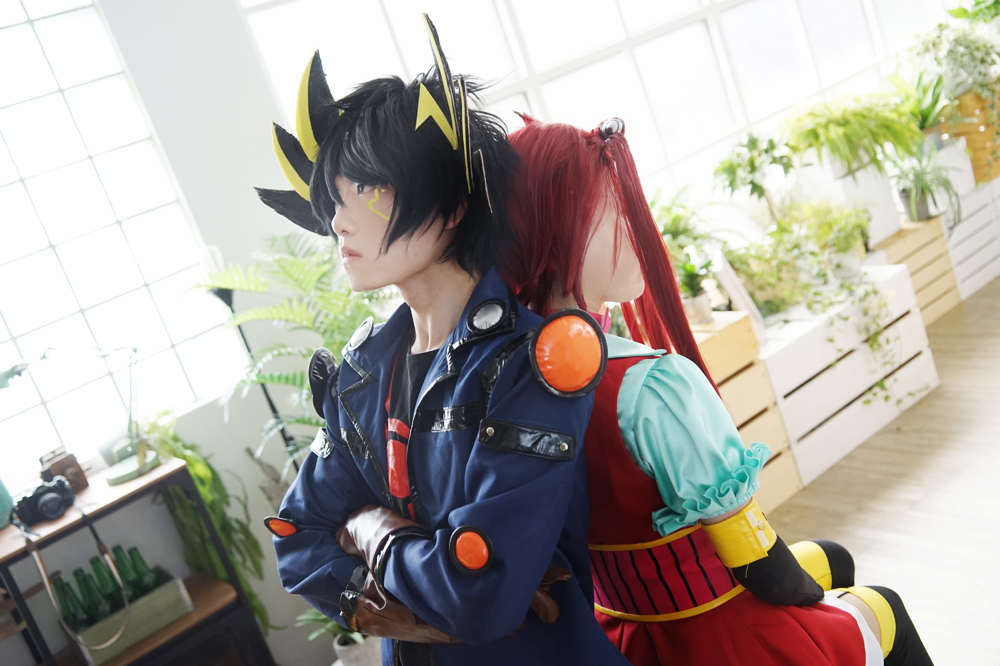

遊戲王團拍





- 攝影棚：高雄 O2攝影棚
- 棚景名稱：人像攝影棚
- CN：
- DM
- 武藤遊戲（亞圖姆）/ 結城
- 海馬瀨人 / 章羯
- 貘良了 / 水無月ゆめ
- GX
- 遊城十代 / 阿琊
- 凱薩亮 / 小櫻
- 5D’s
- 不動遊星 / 粉紅
- 杰克．阿特拉斯 / 小楓
- 十六夜秋 / 狩燁
- ZEXAL
- 九十九遊馬 / 哲奈
- 觀月小鳥 / 皢夜
- ARC-V
- 榊遊矢 / 緋瑀千雪
- 柊柚子 / 咩咩
- 紫雲院素良 / 小v
- VRAINS
- 藤木遊作 / 楚風鈴
- 鴻上了見 / 藤森
- DM
- 攝影師：無限、河馬、武藤、黃大胖